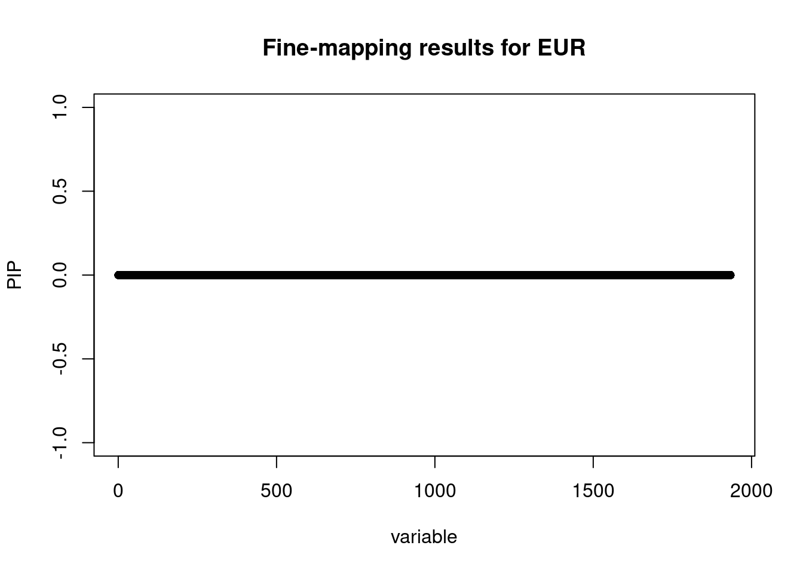
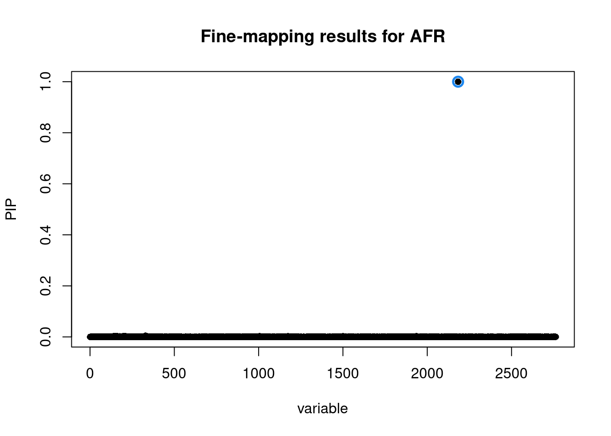

Last updated: 2026-08-25
Checks: 7 0
Knit directory: MF_benchmarking_MFD/
This reproducible R Markdown analysis was created with workflowr (version 1.7.2). The Checks tab describes the reproducibility checks that were applied when the results were created. The Past versions tab lists the development history.
Great! Since the R Markdown file has been committed to the Git repository, you know the exact version of the code that produced these results.
Great job! The global environment was empty. Objects defined in the global environment can affect the analysis in your R Markdown file in unknown ways. For reproduciblity it’s best to always run the code in an empty environment.
The command set.seed(20260210) was run prior to running
the code in the R Markdown file. Setting a seed ensures that any results
that rely on randomness, e.g. subsampling or permutations, are
reproducible.
Great job! Recording the operating system, R version, and package versions is critical for reproducibility.
Nice! There were no cached chunks for this analysis, so you can be confident that you successfully produced the results during this run.
Great job! Using relative paths to the files within your workflowr project makes it easier to run your code on other machines.
Great! You are using Git for version control. Tracking code development and connecting the code version to the results is critical for reproducibility.
The results in this page were generated with repository version ae98c57. See the Past versions tab to see a history of the changes made to the R Markdown and HTML files.
Note that you need to be careful to ensure that all relevant files for
the analysis have been committed to Git prior to generating the results
(you can use wflow_publish or
wflow_git_commit). workflowr only checks the R Markdown
file, but you know if there are other scripts or data files that it
depends on. Below is the status of the Git repository when the results
were generated:
Ignored files:
Ignored: analysis/MFD_flowchart.png
Note that any generated files, e.g. HTML, png, CSS, etc., are not included in this status report because it is ok for generated content to have uncommitted changes.
These are the previous versions of the repository in which changes were
made to the R Markdown (analysis/Run_MFD.Rmd) and HTML
(docs/Run_MFD.html) files. If you’ve configured a remote
Git repository (see ?wflow_git_remote), click on the
hyperlinks in the table below to view the files as they were in that
past version.
| File | Version | Author | Date | Message |
|---|---|---|---|---|
| html | ae98c57 | Guangxin Chen | 2026-08-25 | Restore LD plots and refresh site provenance |
| Rmd | c67888a | Guangxin Chen | 2026-08-24 | Refresh MFD website documentation |
| html | c67888a | Guangxin Chen | 2026-08-24 | Refresh MFD website documentation |
| html | ba2b07b | Guangxin Chen | 2026-08-24 | Build clarified PIP and CS documentation |
| Rmd | c04139a | Guangxin Chen | 2026-08-24 | Clarify cross-ancestry PIP interpretation |
| html | f80f10e | Guangxin Chen | 2026-08-24 | Build harmonized Run MFD page |
| Rmd | 6818556 | Guangxin Chen | 2026-08-24 | Harmonize Run MFD section hierarchy |
| html | 4c5e914 | Guangxin Chen | 2026-08-24 | Build clarified MFD website pages |
| Rmd | 3c26b5e | Guangxin Chen | 2026-08-24 | Clarify cross-ancestry terminology and K inputs |
| html | 56b23d2 | Guangxin Chen | 2026-08-24 | Build K-ancestry website pages |
| Rmd | 85922a0 | Guangxin Chen | 2026-08-24 | Document K-ancestry website usage |
| html | 1f9faf2 | Guangxin Chen | 2026-05-04 | Build site. |
| Rmd | 9dee91e | Guangxin Chen | 2026-05-04 | Build site. |
| html | e4d0c21 | Guangxin Chen | 2026-05-04 | Build site. |
| Rmd | 9d222ae | Guangxin Chen | 2026-05-04 | Build site. |
| html | fd83472 | Guangxin Chen | 2026-05-04 | Build site. |
| Rmd | 203f2c3 | Guangxin Chen | 2026-05-04 | Add Source Code tab to navbar |
| html | 391df5a | Guangxin Chen | 2026-05-04 | Build site. |
| html | 7fb5cf7 | Guangxin Chen | 2026-05-04 | Build site. |
| html | ad671ce | Guangxin Chen | 2026-05-04 | Build site. |
| Rmd | 00f692b | Guangxin Chen | 2026-05-04 | Build site. |
| html | 5050c6d | Guangxin Chen | 2026-02-13 | Build site. |
| Rmd | 3f3ec0d | Guangxin Chen | 2026-02-13 | Refine DBP real data examples |
| html | 86226ef | Guangxin Chen | 2026-02-13 | Build site. |
| html | 6163f84 | Guangxin Chen | 2026-02-11 | Build site. |
| html | 33e49c0 | Guangxin Chen | 2026-02-11 | Build site. |
| Rmd | ad065c6 | Guangxin Chen | 2026-02-11 | Refine DBP real data examples |
| html | 596adfe | Guangxin Chen | 2026-02-11 | Build site. |
| Rmd | e582f0f | Guangxin Chen | 2026-02-11 | Refine DBP real data examples |
The two-ancestry MFD interface accepts two harmonized GWAS dataframes and their corresponding linkage disequilibrium (LD) matrices. The general interface for three or more ancestries is shown in Section 5.
gwas_1 & gwas_2:
Dataframes containing summary statistics for Population 1 and Population
2, respectively.ld_1 & ld_2: Numeric
LD matrices (correlation matrices) corresponding exactly to the SNPs in
gwas_1 and gwas_2.
SNP IDs in your GWAS dataframes.pop_names: A character vector of
length 2 specifying the names of the populations (e.g.,
c("EUR", "AFR")).gwas_1 &
gwas_2)Ensure your dataframes contain the following columns. The column names are case-sensitive.
| Column Name | Status | Description |
|---|---|---|
SNP |
Required | The unique variant identifier (e.g., rsID or
chr:pos). Must correspond to the matching LD input. |
CHR |
Required | Chromosome number (numeric or character, e.g.,
1, "chr1"). |
POS |
Required | Base pair position (numeric). |
Z |
Required | Z-score of the variant effect size (\(Beta / Se\)). |
Beta |
Required | Effect size (log-odds ratio for binary traits or linear regression coefficient for quantitative traits). |
Se |
Required | Standard error of the effect size. |
N |
Required | Sample size for the variant. |
PVAL |
Required | P-value used by the MFD decision rule. |
library(MFD)
library(dplyr)
library(susieR)
# Load built-in example data (chr6 locus, EUR and AFR cohorts)
data(summary_stat_1)
data(summary_stat_2)
data(susie_EU_cov)
data(susie_BB_cov)
head(summary_stat_1) SNP CHR POS Signal Beta Se Z
<char> <int> <int> <int> <num> <num> <num>
1: 6:166484699 6 166484699 0 0.0004176536 0.001825742 0.2287583
2: 6:166485557 6 166485557 0 0.0014530711 0.001825742 0.7958798
3: 6:166486372 6 166486372 0 -0.0002418031 0.001825742 -0.1324410
4: 6:166487606 6 166487606 0 0.0006190716 0.001825742 0.3390795
5: 6:166487930 6 166487930 0 0.0005912423 0.001825742 0.3238367
6: 6:166487971 6 166487971 0 0.0028866047 0.001825742 1.5810585
N PVAL
<num> <num>
1: 3e+05 0.8190568
2: 3e+05 0.4261019
3: 3e+05 0.8946355
4: 3e+05 0.7345499
5: 3e+05 0.7460617
6: 3e+05 0.1138647str(susie_EU_cov) num [1:1933, 1:1933] 1 -0.191 -0.344 -0.299 -0.298 ...
- attr(*, "dimnames")=List of 2
..$ : chr [1:1933] "6:166484699" "6:166485557" "6:166486372" "6:166487606" ...
..$ : chr [1:1933] "6:166484699" "6:166485557" "6:166486372" "6:166487606" ...mfd_result = run_mf_decision_2pop(summary_stat_1,summary_stat_2,susie_EU_cov,susie_BB_cov, pop_names = c("EUR", "AFR"))The output of run_mf_decision is a list containing three
elements: decision (the method logic used),
results (the main data frame), and raw_objects
(the underlying model outputs from either MESuSiE or SuSiE).
The key interpretations focus on the 95% Credible Sets
(CS) and Posterior Inclusion Probabilities
(PIPs) found in the results data frame.
The CS column represents the “Either” Credible Set,
which is a group of SNPs that, with 95% probability, contains at least
one causal variant active in either analyzed
population.
CS values: CS = 0 means
the SNP is not in an “Either” Credible Set; positive values
(1, 2, …) identify the Credible Set. In this
example, only 0 and 1 appear because one
Credible Set was detected.CS_Ancestry_1 and CS_Ancestry_2 indicate if a
SNP is part of a Credible Set specific to one population (derived from
SuSiE or MESuSiE decomposition).MFD provides multiple PIP metrics to help you distinguish between
cross-ancestry and ancestry-specific signals. A common threshold to
declare a “fine-mapped signal” is PIP > 0.5.
PIP_Either: The probability that the
SNP is causal in at least one ancestry. This is the
primary metric for discovery.PIP_Shared: The probability that the
SNP is causal in both ancestries.PIP_Ancestry_1 / PIP_Ancestry_2: The
probability that the SNP is causal specifically in Population 1 or
Population 2.You can use the following R code to filter and interpret the significant findings from your results:
# Extract the formatted results dataframe
res_df <- mfd_result$results
# A. Identify SNPs in the 95% Credible Set
# Retain SNPs assigned to any credible set
credible_set_snps <- res_df %>% filter(CS > 0)
print(credible_set_snps) SNP CHR POS PIP_Either PIP_Shared PIP_Ancestry_1 PIP_Ancestry_2
1 6:167297116 6 167297116 0.9999995 0 0 0.9999995
CS CS_Ancestry_1 CS_Ancestry_2
1 1 0 1# B. Identify Discovery Signals (PIP > 0.5)
# SNPs likely to be causal in at least one population
discovery_snps <- res_df %>% filter(PIP_Either > 0.5)
# C. Distinguish cross-ancestry and ancestry-specific effects
interpretation <- discovery_snps %>%
mutate(Type = case_when(
PIP_Shared > 0.5 ~ "Cross-Ancestry Signal",
PIP_Ancestry_1 > 0.5 ~ "Ancestry 1 Specific",
PIP_Ancestry_2 > 0.5 ~ "Ancestry 2 Specific",
TRUE ~ "Ambiguous / Low Confidence"
)) %>%
select(SNP, PIP_Either, PIP_Shared, PIP_Ancestry_1, PIP_Ancestry_2, Type)
print(interpretation) SNP PIP_Either PIP_Shared PIP_Ancestry_1 PIP_Ancestry_2
1 6:167297116 0.9999995 0 0 0.9999995
Type
1 Ancestry 2 SpecificInterpretation Logic:
PIP_Shared is high, the variant is likely a
cross-ancestry causal variant.PIP_Ancestry_1 is high but PIP_Shared
is low, the variant is likely specific to the first population.When running run_mf_decision, several tuning parameters
can be adjusted to refine the model’s behavior, the decision logic, and
the final clustering of signals.
These parameters control the underlying fine-mapping models (SuSiE and MESuSiE).
L): Specifies the
maximum number of causal effects to consider in the region (Default:
10).prior_weights):
Represents the prior probability of a specific SNP being causal. Users
can supply a custom vector to incorporate functional annotations.ancestry_weight):
Configures the weighting for different ancestries during multi-ancestry
fine-mapping (see MESuSiE
documentation for details).These parameters control the decide_finemapping_method
function, determining whether MFD switches to MESuSiE
(for cross-ancestry signals) or SuSiE post-hoc (for
ancestry-specific signals).
p_thresh): The
P-value threshold (Default: 5e-8) used to identify
significant Ancestry-Specific Variants (AS-Vs) and cross-ancestry
variants.r2_thresh): The LD
threshold (Default: 0.6) used for two distinct purposes:
Since MFD returns the raw model objects within its output list
($raw_objects), you can visualize the results using the
native plotting functions available in susieR or
MESuSiE.
For more advanced, multi-ancestry visualizations, we provide a custom plotting function in the Real Data Example section.
In the example below (where MFD selected “SuSiE post-hoc”), we can visualize the PIPs for each population individually:
susie_plot(mfd_result$raw_objects$susie_list$EUR, y = "PIP",
main = "Fine-mapping results for EUR")
| Version | Author | Date |
|---|---|---|
| 596adfe | Guangxin Chen | 2026-02-11 |
# Plot AFR results
susie_plot(mfd_result$raw_objects$susie_list$AFR, y = "PIP",
main = "Fine-mapping results for AFR")
| Version | Author | Date |
|---|---|---|
| 596adfe | Guangxin Chen | 2026-02-11 |
For three or more ancestries, provide the GWAS summary statistics and
matching LD matrices as named lists. The names and ordering of
gwas_list and ld_list must agree.
Each element of gwas_list uses the same
summary-statistics format described above for the two-ancestry case.
Each element of ld_list is a square SNP-by-SNP LD
correlation matrix matched to the corresponding GWAS table, with
variants in the same order.
gwas_list <- list(
EUR = summary_stat_eur,
AFR = summary_stat_afr,
EAS = summary_stat_eas
)
ld_list <- list(
EUR = ld_eur,
AFR = ld_afr,
EAS = ld_eas
)
mfd_result <- run_mf_decision(
gwas_list = gwas_list,
ld_list = ld_list
)
mfd_result$decision
head(mfd_result$results)For K ancestries, mfd_result$results has the same
general format as in the two-ancestry case, with ancestry-specific
columns named PIP_Ancestry_1 through
PIP_Ancestry_K and CS_Ancestry_1 through
CS_Ancestry_K. Their ordering follows the ancestry names in
gwas_list.
sessionInfo()R version 4.2.2 (2022-10-31)
Platform: x86_64-pc-linux-gnu (64-bit)
Running under: Rocky Linux 8.10 (Green Obsidian)
Matrix products: default
BLAS/LAPACK: /apps/spack/negishi/apps/openblas/0.3.21-gcc-12.2.0-lzvicim/lib/libopenblas_zenp-r0.3.21.so
locale:
[1] LC_CTYPE=C.UTF-8 LC_NUMERIC=C LC_TIME=C.UTF-8
[4] LC_COLLATE=C.UTF-8 LC_MONETARY=C.UTF-8 LC_MESSAGES=C.UTF-8
[7] LC_PAPER=C.UTF-8 LC_NAME=C LC_ADDRESS=C
[10] LC_TELEPHONE=C LC_MEASUREMENT=C.UTF-8 LC_IDENTIFICATION=C
attached base packages:
[1] stats graphics grDevices utils datasets methods base
other attached packages:
[1] susieR_0.12.35 dplyr_1.1.4 MFD_0.2.0 workflowr_1.7.2
loaded via a namespace (and not attached):
[1] ggrepel_0.9.6 Rcpp_1.1.1 lattice_0.20-45
[4] tidyr_1.3.1 prettyunits_1.2.0 getPass_0.2-4
[7] ps_1.9.2 rprojroot_2.1.1 digest_0.6.37
[10] utf8_1.2.4 R6_2.6.1 plyr_1.8.9
[13] evaluate_1.0.5 highr_0.11 httr_1.4.7
[16] ggplot2_3.5.2 pillar_1.9.0 rlang_1.2.0
[19] progress_1.2.3 rstudioapi_0.14 data.table_1.16.2
[22] irlba_2.3.5.1 whisker_0.4 callr_3.7.6
[25] nloptr_2.1.1 jquerylib_0.1.4 Matrix_1.6-4
[28] rmarkdown_2.28 desc_1.4.3 stringr_1.5.1
[31] munsell_0.5.1 mixsqp_0.3-54 compiler_4.2.2
[34] httpuv_1.6.6 xfun_0.48 pkgconfig_2.0.3
[37] pkgbuild_1.4.8 htmltools_0.5.8.1 tidyselect_1.2.1
[40] tibble_3.2.1 matrixStats_1.4.1 reshape_0.8.9
[43] fansi_1.0.6 withr_3.0.2 crayon_1.5.3
[46] later_1.3.2 grid_4.2.2 jsonlite_2.0.0
[49] gtable_0.3.6 lifecycle_1.0.5 git2r_0.36.2
[52] magrittr_2.0.3 scales_1.3.0 cachem_1.1.0
[55] cli_3.6.3 stringi_1.8.4 fs_2.0.1
[58] promises_1.3.0 RcppArmadillo_15.2.4-1 bslib_0.8.0
[61] generics_0.1.3 vctrs_0.6.5 cowplot_1.1.3
[64] tools_4.2.2 glue_1.8.0 purrr_1.0.2
[67] hms_1.1.3 processx_3.8.7 pkgload_1.5.1
[70] fastmap_1.2.0 yaml_2.3.10 colorspace_2.1-1
[73] MESuSiE_1.0 knitr_1.48 sass_0.4.9